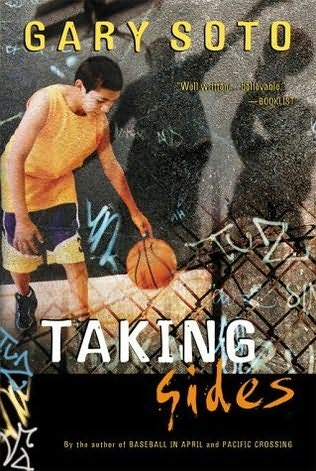

Your Name Here's Recommended Reading List
Every English teacher should have a list, or even several lists, of recommended reading -- books that the teacher enjoys and thinks students might like too! Put your list on your website, and also have on paper to hand out.
Make your classroom a place that supports reading by talking about the books you like, having lots of book share / talk opportunities, library visits, silent reading times, read alouds, literature circles, etc. Require outside reading, use outside reading as extra credit, and recognize in special ways students who read books from your list. Get them reading!
Suggestions for your list:
- Include books from a range of difficulty levels and help connect students to books appropriate to them.
- Let students make suggestions to you, and, if you like the book too, include it on your list.
- Choose books that will appeal to girls as well as boys, and include young adult and multicultural works.
- Indicate titles with mature themes that may need parental approval.
- Only list books you have read and you think will authentically interest students.
- Share your book list with students, teachers, parents, and administrators - urge them all to make their own lists.
- Point students to many wonderful reading lists out there, such as American Library Association's Good Reads for Teens, TeenReads.com, Gwen Tarbox's blog BookCandy, Vandergrifts' 100, Wikipedia, Kalamazoo Public Library, and so many more!
Write lively, engaging book descriptions on your list! Below are samples of approaches teachers have tried.
For each annotated title, put an image of the cover -- and link that image, and the book title to the book page at Amazon. (See sample.) Covers will interest students and links to Amazon can help them learn more about the book, read and enter into the on-line discussion about the book, and, of course, buy the book. (You can even make money as an Amazon Associate!)
Connect to Their Age Group

Taking Sides, by Gary Soto.
Ever move to a new neighborhood? An Hispanic American teenage basketball player has to leave the inner-city and try to fit in in the suburbs. What will it be like?
We Hate Everything But Boys, by Linda Lewis
A humorous coming of age story about three girls who endure a variety of problems from parents, to friends, to boys.
The Outsiders by S.E. Hinton
Ponyboy is 14 tough and confused, yet sensitive beyond his bold front. Since his parent's death his loyalties have teen to his brothers and his gang, the rough, swinging, longhaired boys from the wrong side of the tracks. When his best friend Jonny kills a member of a rival gang, a nightmare of violence begins and swiftly envelopes Ponyboy in a turbulent chain of events.
Connect to Their Interests
As I Lay Dying by William Faulkner
This classic is about a family that has to bury their mother. For those who like Quentin Tarintino, this is a must because of all the disconnected view of the characters.
The Hundred Yard Lie by Rick Telander
Outlines the corruption which is promoting decay in the world of college football. But Telander doesn¹t just rip college football, he presents an alternative design to the current format which is very thought-provoking. If you like ESPN's "Sportcenter," you will love this book!
Appeal to Their Curiosity
Fahrenheit 451 by Ray Bradbury
This is an intense science fiction book written in the '50s. If nothing else, read this book to see if Mr. Bradbury' predictions have come true. It's a great novel to get you thinking about the future and all the books you read and television you watch.
Anthem by Ayn Rand
What if we did not have any choice? What would happen if everything from out jobs to our hobbies were regulated by the government: What would happen if we forgot the word "I"?
Create a Sense of Mystery
Frankenstein, Mary Shelly
Robert Walton, an explorer attempting to sail to the North Pole, finds Victor Frankenstein, half-frozen on an ice flow. Walton's crew rescues Victor who then proceeds to unravel the events that let him to his fate. A horror novel set in Switzerland in the late 1700's.
Engage Their Sense of Justice
Night by Elie Wiesel
Wiesel, a survivor of the Nazi death camps of W.W.II recalls the horror of one of humanities darkest episodes. Well-written and, at times, shocking, the book will take you on an historical journey and, in the process, will create within you an awareness of injustices which exist yet today.
Warriors Don't Cry by Melba Beals
Is it hard to find friends and fit in? The true story of sixteen-year-old Melba Beals, one of the first Black students who had to try to fit in to an all white school in Little Rock, Arkansas, will make the Civil Rights movement come alive for you.
Connect to Something Popular
"Raisin in the Sun" by Lorraine Hansberry
Broke all records for the longest running play on Broadway, a notable accomplishment for an African American woman --Hansberry was the first from either category to write a Broadway hit. The play is an enchanting and eye-opening drama with a focus on a determined African American family searching for their dreams.
Tonto and the Lone Ranger Fist Fight in Heaven by Sherman Alexi
America's hottest Native American author tells the real story of contemporary life on his reservation. Portions of the book were made into the hit film "Smoke Signals."
Sex, Taboo Appeal
Forever by Judy Blum
Many people have tried to ban this book because it tells a story about what it is like for a high school girl to have sex for the first time. Seek parental approval.
Am I Blue? by Marian Dane Bauer
Another book people want to ban, short stories by top young adult authors with teenage main characters addressing in many different ways homosexual family members, feelings, and friendships. Seek parental approval.
Appeal to a Sense of Humor
Don Quixote by Miguel de Cervantes.
This is 17th Century humor at its finest! Cervantes tells of a hero/madman named Don Quixote who truly believes he is a knight in shinning armor sallying forth for the common good.
A Midsummer Night's Dream by William Shakespeare
Think of the most mixed up love story in your mom's soap operas; this one is worse. Not only do four mixed up loves find themselves lost in the woods, the king and queen of the fairies (along with their minions) confuse the whole situation even more!
Pass on Your Enthusiasm
Catch-22 by Joseph Heller
A satirical look at the nature of war, and its effect on those who fought in it. This is one of the funniest books I've ever read. The basis of this story was used as a model for the movie and television series, "M*A*S*H." The books contains some questionable language and situations, parental guidance.
Boss, Mike Royko
The story of the political machine of Chicago under the control of Richard Daly, Boss takes a very interesting look at city politics and government corruption. This book changed how I viewed the American government.
|